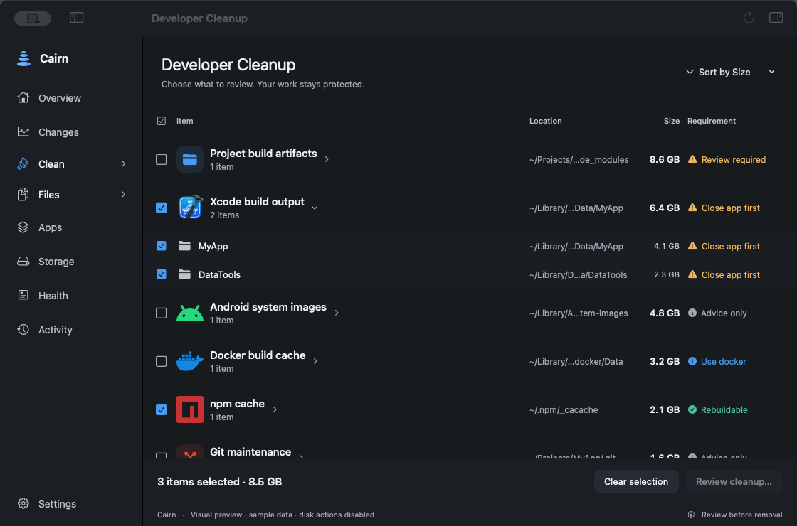

Measure
Know what is measured
Inspect familiar caches from npm, pnpm, Homebrew, Gradle, Go and Cargo. Partial or unmeasured results are labelled, rather than silently treated as empty.
Built around your stack
Start with the build folders and package caches behind your projects. Then look at the files, apps and tools around them.

01 / Developer projects
Projects brings repositories and recognised project folders together, including projects with nothing to clear. Review the branch, changed files and unpushed work before choosing rebuildable output.
Putting a project to sleep selects its generated output for review. A saved wake-up command explains how to rebuild it. Cairn does not run that command for you.
Follow a cleanupnode_modulesDependencies, with link checkstarget · .buildRust and Swift build outputbuild · .gradleMatched to project evidence.gitHistory stays protected02 / Package caches
Measure
Inspect familiar caches from npm, pnpm, Homebrew, Gradle, Go and Cargo. Partial or unmeasured results are labelled, rather than silently treated as empty.
Review
Project evidence, linked packages and running tools can change whether an item is eligible. Close tools when requested and read the requirement beside each path.
Verify
A package tool may remove less than its estimate. For example, pnpm removes only store files no project uses. Check the receipt and fresh free-space reading.
03 / Beyond the build
Storage
See measured categories and the space Cairn could not account for. The map reads sizes; it does not make system data safe to delete.
Files
Inspect individual files and compare duplicate candidates before selecting them. Matching content is not permission to remove a copy you still need.
Applications
Review installed apps and related data. Games and chat storage can lead to the app or launcher responsible for managing them.
Monitoring
Compare dated storage readings. Optional low-space and fast-drop alerts help surface growth while Cairn is open. Alerts do not remove files.
04 / Your tools, your choice
Cairn includes a local connection for compatible coding tools to inspect storage and make cleanup plans. Cleaning access is a separate choice. The connected tool may process the results under its own privacy settings.
Known coding-session locations are distinct from cache candidates. A tool logo on this site describes coverage, not a partnership or endorsement.
Understand connection dataFor the work ahead
Understand the workflow before deciding what goes.